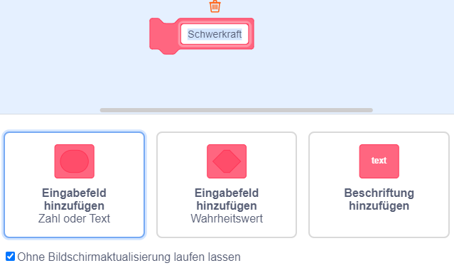

Wie lässt man Scratch springen - Variante 6
Es kann passieren, dass Scratch nach dem Springen in den Boden einsinkt und langsam aufsteigt
- Wir aktivieren die Ohne Bildschirmaktualisierung laufen lassen Option beim Schwerkraft Block
Dadurch wird dieser Block schneller ausgeführt und man sieht gar nicht, dass Scratch einsinkt 😀
